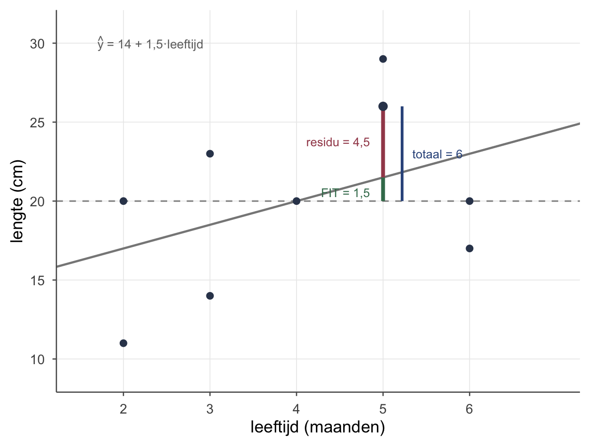

Thema 6 · Regressie
Deel 3 — Samenhang · DATA = FIT + RESIDU
Van dubbele pijl naar enkele pijl
In thema 5 vonden we een verband tussen leeftijd en lengte van de egels — een dubbele pijl, zonder richting. Nu zetten we er een enkele pijl op: we gaan lengte voorspellen uit leeftijd. Dat is regressie.
Onthoud het woord regressie hier als: we brengen een ingewikkelde puntenwolk terug tot iets eenvoudigs — een lijn. De variatie in lengte proberen we zo goed mogelijk te vangen met de variatie in leeftijd.
Het spelletje: DATA = FIT + RESIDU
Er komt een egel binnen. Wat is je beste gok voor zijn lengte? Zonder verdere info: het grote gemiddelde, 20 cm (Deel 1). Maar nu verklap ik je zijn leeftijd — dan kun je het beter doen, via de lijn.
Neem een egel van 5 maanden die 26 cm lang is. We vergelijken eigenlijk twee gokken: de domme gok (iedereen 20 cm — het grote gemiddelde) en de slimme gok (de lijn). We splitsen zijn afstand tot het grote gemiddelde in twee stukken:
\[\underbrace{(y - \bar{y})}_{\text{totale gok-fout}} \;=\; \underbrace{(\hat{y} - \bar{y})}_{\text{wat de lijn verklaart}} \;+\; \underbrace{(y - \hat{y})}_{\text{wat overblijft (residu)}}\]
Oftewel: DATA = FIT + RESIDU. Voor onze egel (we vinden zo \(\hat{y} = 21{,}5\)): de totale gok-fout is \(26 - 20 = 6\); daarvan verklaart de lijn \(21{,}5 - 20 = 1{,}5\); en er blijft \(26 - 21{,}5 = 4{,}5\) over. En inderdaad: \(6 = 1{,}5 + 4{,}5\).
De regressielijn
De lijn is \(\hat{y} = b_0 + b_1 x\), met \(b_0\) het intercept (startwaarde) en \(b_1\) de helling (hoeveel \(y\) stijgt per stap in \(x\)). Begin met de helling:
\[b_1 = r_{xy}\cdot\frac{s_y}{s_x} = \frac{s_{xy}}{s_x^2} = \frac{3{,}75}{2{,}5} = 1{,}5\]
De helling vraagt eigenlijk: hoeveel gezamenlijke beweging is er, vergeleken met hoeveel \(x\) in z’n eentje beweegt? (Let op: \(s_y\) bóven, \(s_x\) onder — een klassieke tentamenval.) Dan het intercept:
\[b_0 = \bar{y} - b_1\,\bar{x} = 20 - 1{,}5\cdot 4 = 14\]
Dus: \(\hat{y} = 14 + 1{,}5\,x\). Twee egels die één maand in leeftijd schelen, verschillen gemiddeld 1,5 cm in lengte — de oudere is de langere. Let op het werkwoord: egels die ouder zíjn, niet “een egel die ouder wordt”. Onze data zijn een momentopname van negen verschillende egels, geen filmpje van één egel die opgroeit; de helling vergelijkt egels onderling, hij volgt er geen één door de tijd. De lijn start (rekenkundig) op 14 — dat betekent niet dat een pasgeboren egel (leeftijd 0) precies 14 cm is; het is het rekenkundige startpunt, ver buiten het bereik van onze data.
Voorspellen en residuen
Vul een leeftijd in en je hebt een voorspelling; trek die van de echte lengte af en je hebt het residu \(e = y - \hat{y}\) — wat het model mist.
| \(i\) | leeftijd \(x_i\) | lengte \(y_i\) | voorspeld \(\hat{y}_i = 14 + 1{,}5\,x_i\) | residu \(e_i = y_i - \hat{y}_i\) |
|---|---|---|---|---|
| 1 | 2 | 11 | 17 | −6 |
| 4 | 3 | 23 | 18,5 | +4,5 |
| 5 | 4 | 20 | 20 | 0 |
| 7 | 5 | 29 | 21,5 | +7,5 |
| 8 | 6 | 17 | 23 | −6 |
Een positief residu = de egel is langer dan de lijn voorspelt (punt boven de lijn); negatief = eronder. Egel 4 (jong maar lang) en egel 8 (oud maar kort) — onze dwarsliggers uit thema 5 — hebben de grootste residuen tegen de trend in. (Verwar over- en onderschatting niet: kijk altijd wat ten opzichte van wat — de echte waarde ten opzichte van de voorspelling.)
Hoe goed past het model?
De verklaarde variantie is \(r_{xy}^2 \approx 0{,}18\) (uit thema 5): de lijn verklaart maar zo’n 18% van de variatie in lengte, 82% blijft in de residuen zitten. Dat zag je in de figuur: voor onze voorbeeld-egel was de FIT (1,5) klein en het residu (4,5) groot. Een matig verband geeft een lijn die iets helpt, maar lang niet alles vangt — en dat is eerlijk.
Pas op
- Niet doortrekken buiten bereik (extrapolatie). Onze egels zijn 2 tot 6 maanden oud. Worden ze bij 60 maanden 76 cm? Natuurlijk niet — de lijn geldt alleen binnen het gemeten gebied.
- Causaliteit. Net als bij correlatie: de richting (lengte uit leeftijd) is een gekozen richting, geen bewijs van oorzaak. We hadden ook leeftijd uit lengte kunnen voorspellen.
- Negatieve \(r\) → negatieve helling. Een consistentiecheck: het teken van \(b_1\) volgt het teken van \(r_{xy}\).
Gestandaardiseerde regressie
Net als \(b_1\) “ruw” is (afhankelijk van eenheden), kun je ook met z-scores werken. Dan voorspel je \(z_y\) uit \(z_x\), en het intercept valt weg (het wordt 0). Het gestandaardiseerde gewicht is bij enkelvoudige regressie precies de correlatie:
\[\hat{z}_y = r_{xy}\cdot z_x = 0{,}42\, z_x\]
“Ga je 1 standaardafwijking omhoog op leeftijd, dan ga je gemiddeld 0,42 standaardafwijking omhoog op lengte.” Ruw is ruk; gestandaardiseerd is vergelijkbaar.
Oefenen
Wat blijft liggen
Hier stopt het voor nu. In een vervolgcursus voeg je méér voorspellers toe (meervoudige regressie) en splits je de hele berg variatie netjes op in sum of squares — model versus error. Dat is precies dit DATA = FIT + RESIDU-spelletje, maar dan voor de hele dataset tegelijk.
Tot slot
Regressie brengt de wolk terug tot een lijn die voorspelt — en we gooien het oude model (het gemiddelde) nooit weg, we bouwen erop: de lijn is het gemiddelde plús een helling. Onthoud DATA = FIT + RESIDU: elke waarneming is wat het model verklaart plus wat het mist. Datzelfde spelletje draagt straks de zwaardere modellen — maar de gedachte blijft deze.
Werkboek OZP 1 · Thema 6, versie 0.1 (handrekenen & theorie). Doorlopend voorbeeld: de egels.